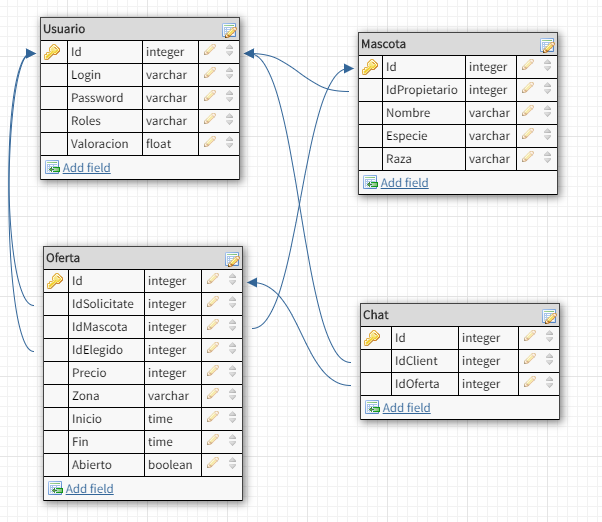

Leeme: Interpet
Objetivo
Una aplicación pensada para cumplir los requerimientos de la asignatura de IW,
y además serviría para poner en contacto posibles cuidadores y propietarios de mascotas.
A todo el mundo le gustan las mascotas, no obstante no todo el mundo puede encargarse de ellas siempre,
para ello hemos diseñado una página de contactos con ese interés en particular. Esta permitira que distintos
cuidadores ofrezcan sus servicios a cualquier propietario que las necesite.
Tanto los cuidadores como los propietarios podrán valorar al otro según su labor o su trato en general, esto
servira para que el resto de usuarios sepa que esperarse. Llegando incluso a poder denunciar malas conductas
para que los administradores pueda expulsar al infractor.
Soporta los siguientes roles:
-
El administrador (usuario: a, clave: a) puede ver todas las denuncias realizadas, incluyendo el chat
de la propia negociación asociada a esta y actuar en consecuencia.
-
Un usuario (usuario: p, clave: p) podra actuar tanto de cuidador como de propietario. Pudiendo ofrecer sus servicios
o solicitar un cuidador.
-
Base de datos
Generado con db designer;

Vistas
- Indice - vista inicial. Permite especificar una clase, o hacer login
(esquina superior derecha).
- Segar - vista del administrador.
Permite administrar las denuncias, y acceder a las negociaciones.
- Perfil - vista del usuario. Permite modificar sus datos.
- Chat - vista para la negociación entre propietario y cuidador. Contiene la opción de
confirmar el trabajo.
- Crear Denuncia - vista que permite a los usuarios denunciar a otros con los
que ha interactuado por su mala praxis.
- Crear Oferta -vista que permite crear una petición de trabajo.
- Ofertas - vista que contiene un tablón de anuncios que contiene las ofertas existentes e información pertinente.
- Mis ofertas - vista que contiene las ofertas realizadas por el usuario registrado e información pertinente.
- Registros - vista para registrarse como nuevo usuario.
Recursos
- Logotipo, obtenido de alguna parte
{kind=link}